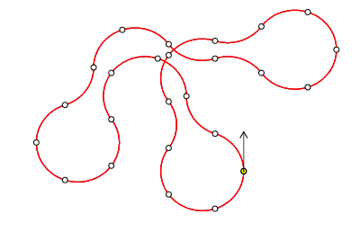

A robot moves in a series of one-fifth circular arcs ($72^\circ$), with a free choice of a clockwise or an anticlockwise arc for each step, but no turning on the spot.
One of $70932$ possible closed paths of $25$ arcs starting northward is

Given that the robot starts facing North, how many journeys of $70$ arcs in length can it take that return it, after the final arc, to its starting position?
(Any arc may be traversed multiple times.)
No test cases available.